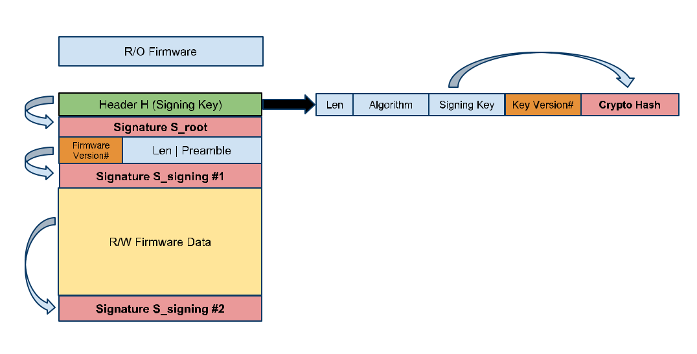

AbstractThis document describes the cryptographic primitives and building blocks used for implementing verified boot in the firmware. The document is primarily targeted at Google Chrome OS-based devices running Google-signed firmware and software. Chromium OS devices may use similar verified boot schemes with their own (non-Google-signed) chain of trust. We want to emphasize this does not prevent devices based on the open source Chromium OS project from having their own firmware. The goal here is to assure customers of Google Chrome OS devices that they are actually running Google Chrome OS.Design principles and pitfalls
BackgroundThe
firmware is the lowest level of software that runs on a system. In
Chrome OS devices, the firmware is responsible for initializing the main
application processor along with RAM, embedded controllers, chipsets,
etc. In certain architectures, e.g. ARM, a separate modem processor is
responsible for initializing the main processor. Parts of the firmware
are read-only (at the lower layers). This code is
baked into the firmware during production and can't be changed. The
rest of the firmware is field upgradable. The proposed mechanisms for
such updates are described in a separate document. At the boundary
of read-only to read-write firmware,
the verified boot mechanism (firmware-land) kicks in. It is responsible
for verifying that the next piece of code is signed by Google for Google
Chrome OS devices. The goal here is to provide a boot path to end users
which provides assurances that they are running known good code. Important note: To reemphasize the point made in the Verified Boot design document, we are not preventing users from running any operating
system they please, only to provide a mechanism that guarantees that a
Chrome OS device is running the authentic Google Chrome OS. How cryptographic signature verification worksThis
section presents a small primer on how signature verification is
designed to work in our context. We use public-key cryptography: each
key is actually a keypair with public and private key components. Data
encrypted by the private key can be decrypted by the public key and vice
versa. In all cases, the private key component is known only to Google.
The public key is used by the firmware for performing the verification.
A simple implementation would be for Google to encrypt an entire r/w
firmware component with the private key, and for the firmware to use the
corresponding pre-baked public key to decrypt the firmware and continue
execution (if decryption is successful). However, public-key
cryptography is sloooow, and moreover, we are not interested in the
confidentiality of the firmware component, only that any code we execute
in the verified boot path is authenticated. Therefore, we use the
concept of cryptographic signatures. Public-key signatures combine
message digests (such as SHA-1) with public-key cryptography. A message digest of a message m maps the message to a fixed size hash value H(m). A cryptographic message digest has two essential properties:
Here are the steps for firmware verification:
The security of the above scheme depends on two key factors:
We
ensure that the correct public key is used by putting the public key in
the read only part of the firmware. It doesn't matter if it can be read
by an attacker, since it only allows for verifying an existing
signature. We ensure that the signature is generated by Google by
keeping the private key known only to Google, so only Google can
generate a valid signature on a blob of data. Here's a table listing various hashing and signature verification algorithms, including their speed as measured by invoking "openssl speed" on a typical netbook.
Root keys and signing keysSince signature verification comes with an additional overhead, we can't simply choose to use the strongest available verification algorithm for the whole verified boot process. However, we need to start with a strong enough algorithm to protect Chrome OS devices for their expected lifetime. For long-term use, NIST recommends using at least RSA-2048 and SHA-256. Therefore, we plan on using a combination of a stronger root key and weaker signing keys. We will use a strongest available algorithm (within practical speed constraints) to sign an initial key. Subsequent stages of the verified boot will use the weaker (but faster) algorithms for verification.If
one of the weaker algorithms or signing keys used for verification of
these subsequent stages is cracked/broken, a new firmware or software
update can be issued that uses a different signing key and/or a stronger
algorithm. Preventing rollback attacksTo
prevent rollback attacks, where an attacker may try to to update a
Google Chrome OS device with an older signed firmware that has a known
vulnerability, each signing key has a strictly increasing
associated Key Version#. The read-only firmware writes the highest Key Version# so
far into an NVRAM location, in the TPM chip. This NVRAM location is
lockable, such that only the read-only firmware can write to it, and
can't be overwritten by any other firmware component or the operating
system. During the verified boot process, the read-only firmware refuses
to pass control to a signed firmware block that uses a signing key with
an index smaller than the highest seen so far. In addition, since we
have two firmware copies, this index can be updated whenever min(Key#A,
Key#B) changes. This allows the device to survive a failed firmware
update. On successful boot with the new firmware, the previous copy of
the firmware is overwritten by the new one, the highest signing key
index is updated, and any further rollbacks are prevented. In addition to the Key Version# associated with each key, each firmware update has an associated Firmware Version#.
The R/O firmware also keeps track of this in a non-volatile location
similar to the Key Version# to prevent rollbacks to an older R/W
firmware. Note that these two numbers serve different purposes:
Speed and bottleneck considerationsAlthough public key signature verification is an expensive operation, we expect the main bottleneck to be hash computation of blocks of data that need to be verified. In addition, verification will likely happen just a few times for each final hash value that is computed. Given these tradeoffs, it's likely that we'll still be able to use the stronger verification algorithm (for example, RSA-2048 below) once we switch to using the signing key for verification, but we'll need to switch to a weaker hashing algorithm (SHA-1), that is, start with RSA-4096+SHA-512, then switch to RSA-2048+SHA-1. This tradeoff can be revisited and analyzed in more detail once we have some hard numbers from an actual verified boot implementation.Putting it all together: Crypto Architecture For Header H:
Signature S_root = RSA_Sign(Root Key, H) The signature for the R/W firmware is split into two:
This signature helps in verifying the length field and the Firmware rollback early in the verification process. For rollback protection, we have a pair of indices: the Key Version# (K#) and the Firmware Version# (F#). K# is updated whenever the signing key is changed—either if it's past its lifetime (Y months) or if it has been compromised. F# is incremented with each update. Logically, the combination of K# and F# uniquely identifies the version of an update. The update process will refuse to update if either of the following conditions is TRUE:
Having separate key version and firmware version rollback prevention indices allows for generating new firmware updates without the need to generate a new signing key each time (which in turn requires getting the root key out of secure storage). This way, firmware updates are protected against rollbacks even if the signing key stays the same. The steps performed by the read-only firmware are as follows:
Note that, for both the root key and signing key, only the public part of the key is exposed. This ensures that only Google can generate S_root and S_signing. Kernel-level verificationOnce the R/W firmware has been verified, the next step is for the R/W firmware to verify the kernel before passing control to it. There are a few possible options here:
The main disadvantage of option 1 is the extra verification step required for verifying the kernel signing key. In addition, a separate rollback key index must stored for the kernel signing key. The main disadvantage of option 2 is that now any kernel update must be accompanied by a firmware update with a new signing key (for preventing rollback). As
a firmware update is much more time consuming and disruptive than a
kernel update, we chose option 1 (use a different signing key just for
kernel signing). In addition, the kernel is stored on the disk and it needs to be retrieved by parsing the partition table. Currently, there is no cryptographic verification of the partition table. However, the firmware code does a strict checking of the partition table (e.g. ensuring there are no overlapping partitions) and outright rejects partition tables that do not look right. Note also that since this happens in the R/W firmware, the verification mechanism can change over time and with autoupdates. Lifetime of the root keySince
the root key is baked into the read-only firmware at manufacture, it
can't be changed once a Chrome OS device leaves the factory. Since any
update to this key requires changes during manufacture, these will be
changed once every four years. Since the root keys have a much larger
lifetime than the signing keys, they will be of higher strength (4096
bit RSA keys or higher). The signing key to use for pushing an update to
a device can be determined via the SKU. Newer SKUs will use the newer
root key chain of trust. What crypto implementations need to be a part of the R/O firmwareIdeally,
due to firmware size limitations, goals for minimal complexity, and the
inability to update in the field, we'd like to limit the functionality
implemented in the the read-only firmware to the bare essentials. At the very least, the read-only firmware needs to implement the following:
Items 1 and 2 are required to verify the signing key. Item 3 is required to prevent rollback attacks. The weaker (relatively) crypto algorithms used by the signing keys may be implemented in the R/W firmware. However, there are risks to consider here:
To avoid the additional complexity involved in having the algorithm implementations in the R/W firmware, we currently plan on having the R/O firmware implement all of SHA-1/256/512 and RSA-1024/2048/4096/8192. Although R/O firmware size may be a constraint, the variants within each class of algorithms (SHA-256 and SHA-512, for example) are similar, and there should be some opportunity for code reuse between them. Other considerationsWhat key size is enough for the root key and signing key?NIST recommends the
use of RSA 2048/SHA-256 or higher as the signature algorithm for use
after 12/31/2010. Our plan is to use a 8192-bit RSA key with SHA-512 for
the root key signatures. The security of RSA derives from the computational difficulty of factoring very large numbers into its prime factors. The best known current algorithm for factoring large numbers is the Number Field Sieve (NFS). The runtime of NFS scales as ec n^1/3 (log2 n)^2/3, where n is the size of the number in bits and c is typically 1.5-2. For
the root key, we plan to use a 8192-bit RSA key. Note that, based on
the runtime scaling of the Number Field Sieve, it takes at least
1.429206 x 1024 more computational effort to
factor a 4096-bit number than a 1024-bit number. As a reference, the
general-purpose factoring record is for the 664-bit RSA200 number which
took the equivalent of 55 2.2GHz Opteron CPU years for the sieving step
of NFS and an additional 3 months on an 80 2.2GHz Opteron CPU cluster
for the matrix steps. For
signing keys, we have considerable more flexibility, since the key size
or the keys themselves can be changed with future system update. Since
these keys will change/rotate often, we plan to use 1024-bit RSA keys
which provides a good speed/performance trade-off. RSA paddingRSA operations during signature operations are not directly performed on the raw cryptographic hashes but rather on a padded/extended version of the cryptographic hash. We intend to use the standard padding/extension function for this. There are two padding schemes specified by PKCS#1 v2.1 standard - PKCS1.5 and PSS. Although PKCS#1 recommends phasing out PKCS1.5 (certain attacks were discovered against faulty implementations) in favor of PSS, PSS is more complex to implement. PSS requires the use of a PRNG. So if PSS padding is used, a crypto-grade PRNG will also need to be implemented as part of the read-only firmware. Currently, we plan on using PKCS1.5 padding since its implementation is much simpler.What is the TPM used for?For
verified boot, we do not use the TPM for performing cryptographic
operations, since TPM chips are not necessarily crypto-accelerator
devices, and there is no speed advantage. We use the TPM as secure
non-volatile storage for preventing key rollback attacks. The TCG TPM
standard (v1.2 rev103) includes two mechanisms that we may use for
storing monotonically increasing integers in a runtime, tamper-resistant
fashion:
We
use NVRAM regions in the TPM and write the counters to that space.
This area is only writable at firmware read-only boot time and
during recovery mode. Functional tests and hardware qualificationsFor
firmware vendors, we have a suite of functional tests to test their
implementations. This includes testing crypto blocks like RSA, SHA, as
well as crypto primitives like signature checking. For hardware qualification tests, here are examples of tests we use:
More details can be found in the documentation for the Semi-automated Firmware Testing Framework (SAFT). |
|
Chromium OS > Design Documents >
Firmware Verified Boot Crypto Specification |